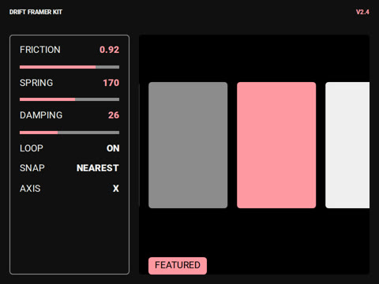

Physics carousel
Why real physics?
Carousels used to be the thing you apologised for — janky, heavy, hostile to touch. Not anymore. Drift gives every row on the page the weight of a real object, so people throw it, catch it and feel it land. Here is what that unlocks for your sites.
Make rows feel physical
Momentum, friction and springs are solved every frame instead of faked with an easing curve. A flick carries exactly as far as the hand that threw it meant it to, then settles without a twitch.
One feel, every input
Mouse drag, trackpad swipe, touch or arrow keys — Drift reads the velocity of each and hands back the same motion, so the row behaves like one object no matter what moved it.
Ship it in a single line
One call to new Drift(el) and you are done. Prefer no-code? Drop in the Framer component. Either way native scroll-snap stays as the fallback, nothing hijacks the page, and screen readers still see a plain list.
Sync it with anything
Read progress, velocity and the settled index on every frame to drive WebGL, video scrubbing or parallax layers in lockstep with the gesture.
Drift runs the rows
What began as the gallery code for one studio site is now the carousel behind product shelves, festival lineups and editorial covers across the web. The physics was a side project. So we open-sourced all of it.
Grab the row and throw it

So we built
carousels
Enter
Drift
as they should be
Drift is a free, open-source library 6kb that turns any row of elements into a throwable, physically honest carousel in a single line of code. Go no-code with the Framer component, and keep every slide reachable by keyboard and screen reader.
Made by drift.collective. Using Drift in your project? Sponsor it or work with us.